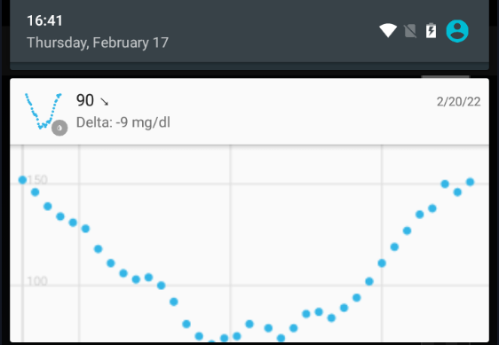
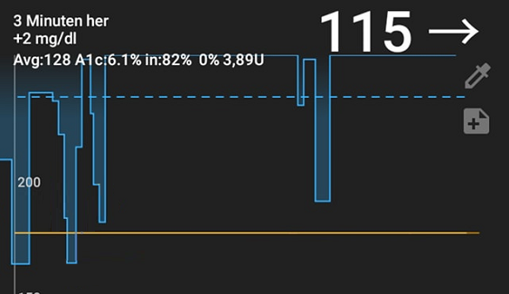
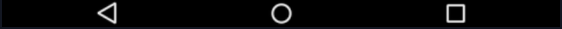
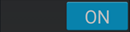
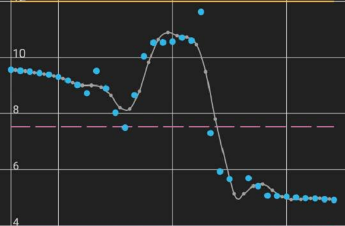
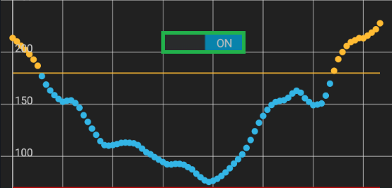
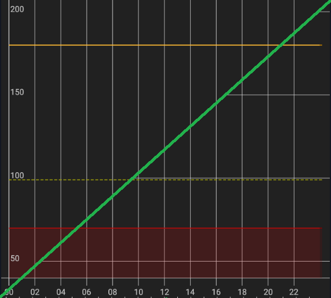
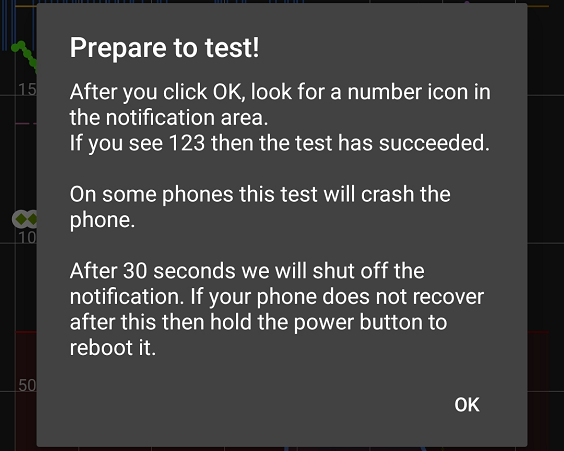

Display

Settings
 xDrip+ Display Settings
xDrip+ Display Settings
This menu allows you to customize many visual aspect settings of xDrip+.
xDrip+ Display Settings
Note: Check Graph settings features before using Color settings.
Color Settings⌁
xDrip+ Color Settings
 Customize Colors
Customize Colors
The example chart on top will show the effect of what you modify.
Example Chart
When modifying a color you can chose
- hue and saturation
- lightness/darkness
- transparency.
The result will show compared to the original color.
You can revert the color to default or save it.
Glucose values and lines⌁
You can customize the main BG plot. High and Low limits are defined in Glucose Units settings.
High, In-range and Low Values color will change the graph and limit lines on your main view, notification and widget charts.
GLUCOSE VALUES AND LINES
High Glucose Values
In-Range Glucose Values
Low Glucose Values
Bad Glucose Values
Filtered Values

Bad and filtered values can be seen with sensors supporting raw data.

Colors of BG readings and Trend Arrows⌁
You can also customize the current BG value and trend arrow color in respect with range limits.
COLOR OF THE BG READING AND TREND ARROW
High Glucose Values
In-Range Glucose Values
Low Glucose Values
Treatments and predictions curves⌁
- Insulin on board (treatment main curve)
- Insulin activity (small dotted line)
TREATMENTS/PREDICTION CURVES
Insulin on Board
Insulin Activity

- Glucose prediction (main prediction graph)
- Carbs on board (small dotted line)
TREATMENTS/PREDICTION CURVES
Glucose Prediction
Carbs on Board

Average and target lines⌁
- 8-Hour average line
- 24-Hour average line
- Target line
AVERAGE AND TARGET LINES
8-Hour Average Line
24-Hour Average Line
Glucose Target Line

Annotations and dots⌁
Blood tests (also calibrations), and treatments.
ANNOTATIONS AND DOTS
Blood Test Background
Blood Test Foreground
Treatment Background
Treatment Foreground
⌁
Backgrounds⌁
Graphs backgrounds, main chart
BACKGROUNDS
Main Chart Background
Notification Chart Background
Widget Chart Background
Example: notification chart background

Plugins and features⌁
If you use a plugin you can also display the plugin glucose value as a secondary graph.
Plugin plot on graph must be enabled.
PLUGINS AND FEATURES
Secondary Plugin Glucose value

If you have steps and heart rate from a wearable device you can customize graphs colors.
PLUGINS AND FEATURES
Step counter 1st Color
Step counter 2nd Color
Heart rate monitor
In the example below 1. heart rate and 2. step counter.

Basal and SMB⌁
If you manage to display basal (from AAPS or manual setup) you can also customize the color.
INSULIN COLORS
Basal TBR
SMB Icon
SMB Line

SMBs are icons decluttering the graph for micro-bolus treatments.
Flair colors⌁
If you want to put some color on the top and bottom bars of your Android screen, enable flair colors.
FLAIR COLORS
Custom Title/Nav Bar 
Upper Title Bar
Lower Navigation Bar
Upper title bar:
Lower navigation bar:

Language⌁
By default xDrip+ will use your phone language. You can select another language for xDrip+ and force it to display instead of the phone language.
For this:
Select the language in Choose a specific language.
Choose a specific language

Toggle the Force language Text switch to ON.
Force English Text
Smooth sensor noise⌁
Smoothing displays the smoothed curve (it does not change readings), useful for noisy measurements.
You can also try Graph smoothing to clean your graph.
Smooth sensor noise
Try to work around noisy readings

Show interface hints⌁
After you first installed xDrip+ you will see hints during first opening of some features, you can disable this behavior or reset it.
Show interface hints
Show tips/hints describing buttons functions etc. Uncheck and recheck to reset to the beginning.
Graph Settings⌁
You can customize most of the items that will display on the main graph.
Graph Settings
Adjust chart items
Graph smoothing⌁
Graph Smoothing
Graph smoothing will apply a smoothing filter to the graph to make it easier to follow (less noise).
This is only a visual effect and doesn't impact readings.
Enable
Simplify graphs by smoothing out irregularities in the previous readings. The current reading, alerts and broadcast values are not affected by this setting.


Show unsmoothed 
Show unsmoothed data also if graph smoothing is enabled. If calibration plugin is used, will show unsmoothed data instead of plugin data.
Rewrite history⌁
Rewrite history will soften transitions after adding a new calibration to reduce the step like effect.
Make sure this is also enabled on followers to avoid different visualization of past BG values.
Rewrite History
After calibration, adjust recent raw graph to smooth to the new calibration

Widget range lines⌁
You can select to visualize high and low limit lines on the widget.
Widget Range Lines
Show a high and low line on the widget
Main graph lines⌁
You can disable vertical time lines on the main graph.
Show Graph grid time lines
Grid time lines visible

You can disable horizontal glucose lines on the main graph.
Show Graph grid glucose lines
Grid glucose lines visible

Filtered data⌁
Filtered or smoothed plot adds another graph curve and can eventually create missing data.
Display Filtered Plot
Useful for noise and missed readings
Create missing filtered
Make filtered data as needed
For some data sources (like patched LL app) this will expose the unfiltered raw data as xDrip+ BG display is already filtered.

Raw data⌁
Raw data that can be displayed by xDrip+ if available.
Display raw data plot
G4, G5 and rebatteried G6 provide raw data.
Now raw data are mainly visible for Libre sensors but not with this option.
For Libre sensor raw data use Advanced Settings for Libre 2.
Basal information⌁
If basal information is available from an external source (AAPS NSClient) it can be displayed by xDrip+.
In AAPS/NSClient:
-
Config builder
-
Synchronization - xDrip+ settings
- Enable Send status line to xDrip+
In xDrip+:
- Settings - Less common settings - Enable Extra status line - Enable External status
- Settings - Inter-app - Enable Accept treatments
- Enable Show basal TBR
Show Basal TBR
Basal information will also be uploaded to Tidepool.
Target and average lines⌁
You can visualize various reference lines on the graph:
Show Graph target line
Show Graph recent average
Show Graph total average
- 8-Hour average line (recent)
- 24-Hour average line (total)
- Target line
Libre trend⌁
Libre trend enables a small graph available in the three dots menu on the main view.
Show Libre trend
G6 predictions⌁
G6 prediction is a built-in feature of the G6 transmitter showing as small grey dots.
G6 prediction

SMB⌁
SMBs are icons decluttering the graph for micro-bolus treatments. Touching the SMB gives the amount in insulin in the information line.
Show micro bolus icons
Medtrum Secondary
Display the Medtrum A6 secondary sensor values.
Trend momentum⌁
Show momentum working curve
Displays a red dotted line (1) momentum extrapolating current BG trend for predicted lows/highs.
It is completely independent from predictions (2) and doesn't take in consideration carbs or insulin models.

Noise workings⌁
Additional noise calculation visual information, five dots yellow line on the right of the curve.
Show Noise workings
Backfilled data⌁
Backfilled data can be indicated with an empty blue dot.
Show backfilled data

Widget graph⌁
You can hide the graph on the widget and keep only the value.
Hide widget graph
These two options are only available for developers.
Illustrate remote data
Customize Y axis range⌁
The main screen vertical axis has a default minimum of 40 mg/dl (2.22 mmol/l) and default maximum of 250 mg/dl (13.9 mmol/l).
You can arbitrarily fix lower and upper value for the Y axis. Whenever readings will be out of this range, the graph will extend the range to make them visible. Y scale will then return to these settings when out of fixed range values are not displayed anymore.
Customize y axis range
Glucose number from Filtered⌁
Filtering might delay readings and is not recommended.
Filtering is hardware coded for Patched Libre 2 app data source.
Glucose number from filtered
Bolus Wizard Preview⌁
BWP will show insulin on board (IoB) and suggest corrections based on the predictive parameters entered in xDrip+.
This is an indication. Make sure you understand the EULA before using it.
Never follow the suggestions when BG is fast changing.
Bolus Wizard Preview will show only when either carbs or insulin are present.
Show Bolus Wizard Preview
Display Insulin/Carb calculations

Always show Bolus Wizard Preview
Display Insulin/Carb calculations all the time
If you force always show BWP it will always suggest a correction (insulin or carbs).
High Priority Notifications⌁
This will bring xDrip+ graph and notifications at the top of the list, disabling it brings it down.
You can disable High Priority Notifications, but you shouldn't disable it completely with Run collector in foreground if you don't want xDrip+ to be put to sleep by Android.
High Priority Notifications
Show notifications and graph at the top (also useful on lock screen).
Public Notifications⌁
This makes notifications visible on locked screen.
Public Notifications
Parakeet and Extra Test Features⌁
You might have wanted to use these settings with a Parakeet.
Parakeet and Extra Test Features
Enable Reminder Features⌁
Enabled by default, you'll find reminders in the three dots menu top right on the main view.
Enable Reminder Features
Show reminder menus and features
Always On Display Settings⌁
xDrip+ can use Android accessibility to display its widget in the always on display screen, if your phone supports it.
Enable xDrip Accessibility
If your phone has Always On Display you can enable the xDrip widget there by enabling the xDrip accessibility service from the Android System Settings page.

Numbered wall on Locked Screen⌁
xDrip+ can display your BG value on the phone locked screen.
Some features requires Android 7 and above.
Numbered wall on Locked Screen
This menu allows you to customize the number displayed.
Configure Number wall
Adjust and preview wall layout
You will see a real time preview of the result (123 ⇅)
- Change the font size
- Change the vertical position (or vertical distance between numbers)
- Change the horizontal position (or horizontal distance between numbers)
- Change the number color
- Select the background image
- The actual numbered wall
Enable Locked screen display to show the numbered wall (Android 7 and above).
Use on Lock screen
Show on lock screen. Android 7 and above only!
You can change the text and background color.
Number Wall on Lock Screen
Wall Text Color
Wall Shadow Color
Enable and disable the feature for a defined period of the day. By default it enables all day long.
Turn On (all day)
Choose time to start showing
Turn Off Time
Choose time to stop showing - set to same as start for always on
Number Icon in Notification Area⌁
xDrip+ can display your BG number as an icon in the top left notification area and in the drop down notifications.
Number Icon in Notification Area
You should test the feature before using it as it might crash on some phones.
Run Number Icon Test
Number icons crash some phones! Tap to run the test before enabling the feature!

You phone will vibrate a few times during the test and you should see the BG icon 123 top left.
If this doesn't work it means you shouldn't enable the feature.
Once functionality is confirmed you can enable it.
Number Icon tested
When you have confirmed your device can display a number icon
Show Small Number Icon
Shows the current glucose number as an icon for the notification bar and lock screen
You can also enable a large icon (1), with or without arrow (2) in the notifications area.
Use Large Number Icon
Shows a large number in the notification area only visible when opened
Show Arrow in Large Icon
Shows the trend arrow in the large icon
Show xDrip on Boot⌁
This will make xDrip+ open automatically when your phone restarts.
It might be a good idea to enable this feature if your phone performs automatic updates and reboots (not recommended) and xDrip+ is not starting automatically at reboot.
Show xDrip on Boot
Bring up xDrip screen automatically after device boots